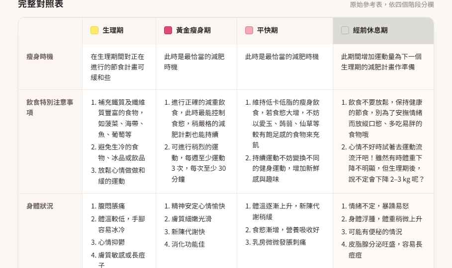

我做了一個「跟著生理週期瘦身」的小儀表板
網路上流傳一張「生理週期 × 減脂」對照表——什麼時候火力全開、什麼時候該休養，講得很清楚。 但每天要對著表格算「我今天在哪一階段」實在麻煩，於是我把它做成一個會自己算的儀表板。
01
把一張表，變成「今天該做什麼」
一打開就直接告訴你今天落在哪個階段——生理期、超速期、平快期、經前休息期—— 以及週期第幾天。一條彩色進度條讓你一眼定位，旁邊順手算好本週期的起訖與下一階段倒數。

02
每個階段的策略，還能直接問 AI
每個階段都對應到該注意的飲食與運動重點。我還接上了 AI 顧問，會帶入「今天的階段」回答—— 像是「現在可以吃甜點嗎」「30 分鐘內適合做什麼運動」，不必再自己翻表對照。

03
用月曆，先把整季規劃好
把 5–12 月整季依四階段著色，哪幾天進入黃金減脂期一目了然。 要安排聚餐、出遊或加強訓練時，提前一眼就知道該避開還是該衝。

04
一張完整對照表，隨時速查
把四個階段的瘦身時機、飲食、運動、身體狀況並排成一張表， 當作隨時翻閱的速查卡——這也是整個 App 最初的資料來源。

05
做成手機 App，隨身帶著走
最後包成 PWA，加到手機主畫面就像原生 App 一樣開啟。 出門在外也能隨時看今天的狀態，把「跟著週期生活」變成順手的小習慣。

週期長度、各階段天數與「最近一次生理期開始日」都能自己調——因為每個人的週期都不一樣， 工具該配合人，而不是反過來。
※ 本工具僅為一般保健建議與行為提醒，不取代專業醫療意見。